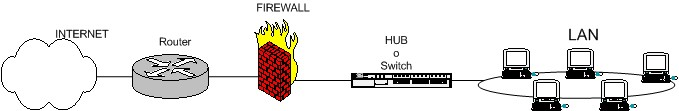
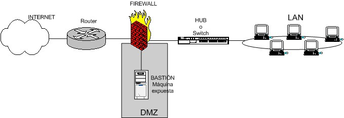
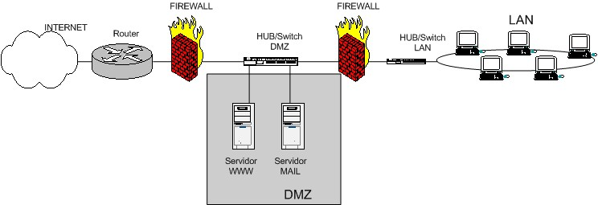
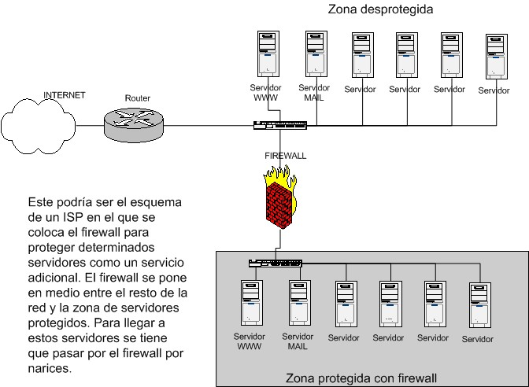
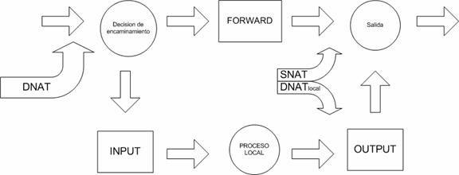
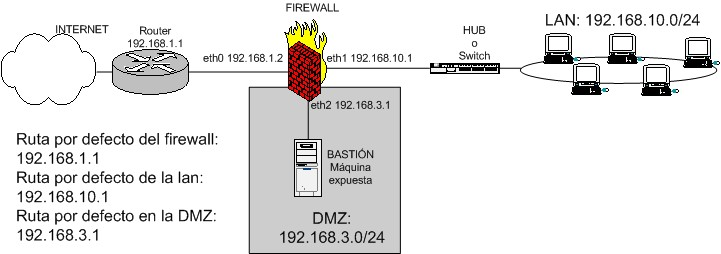
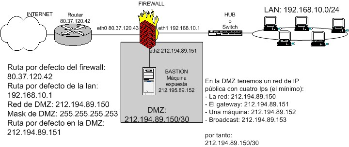
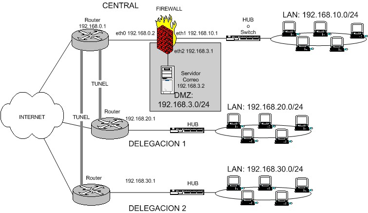
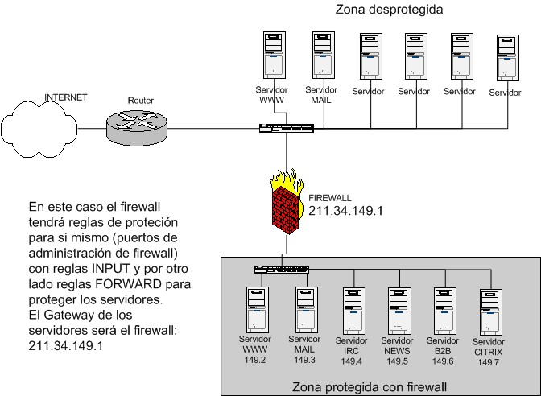

|
Por Pello Xabier Altadill Izura
Pello Altadill
Ingeniero Informático por la UPV-EHU
http://www.pello.info/forum/iptables
(Actualizaciones y ejemplos en http://www.pello.info
- VERSIÓN PDF)
1. Qué es un firewall
2. Qué es iptables
3. Al grano: creando un firewall con iptables
3.1 Proteger la propia máquina
3.2 Firewall de una LAN con salida a internet
3.3 Firewall de una LAN con salida a internet con DMZ
3.4 Firewall de una LAN
con salida a internet y VPNS
3.5 Firewall puro y duro entre redes
3.6 Firewall con política por defecto DROP
4. Cómo depurar el funcionamiento del firewall
Enlaces, notas, autor
1. Qué es un firewall
Un firewall es un dispositivo que filtra el tráfico entre redes,
como mínimo dos. El firewall puede ser un dispositivo físico
o un software sobre un sistema operativo. En general debemos verlo como
una caja con DOS o mas interfaces de red en la que se establecen una reglas
de filtrado con las que se decide si una conexión determinada puede
establecerse o no. Incluso puede ir más allá y realizar
modificaciones sobre las comunicaciones, como el NAT.
Esa sería la definición genérica, hoy en dia un
firewall es un hardware especifico con un sistema operativo o una IOS
que filtra el tráfico TCP/UDP/ICMP/../IP y decide si un paquete
pasa, se modifica, se convierte o se descarta. Para que un firewall entre
redes funcione como tal debe tener al menos dos tarjetas de red. Esta
sería la tipología clásica de un firewall:

Figura 1: esquema de firewall típico entre red
local e internet
Esquema típico de firewall para proteger una red local conectada
a internet a través de un router. El firewall debe colocarse entre
el router (con un único cable) y la red local (conectado al switch
o al hub de la LAN)
Dependiendo de las necesidades de cada red, puede ponerse uno o más
firewalls para establecer distintos perímetros de seguridad en
torno a un sistema. Es frecuente también que se necesite exponer
algún servidor a internet (como es el caso de un servidor web,
un servidor de correo, etc..), y en esos casos obviamente en principio
se debe aceptar cualquier conexión a ellos. Lo que se recomienda
en esa situación es situar ese servidor en lugar aparte de la red,
el que denominamos DMZ o zona desmilitarizada. El firewall tiene entonces
tres entradas:

Figura 2: esquema de firewall entre red local e internet
con zona DMZ para servidores expuestos
En la zona desmilitarizada se pueden poner tantos servidores como se necesiten.
Con esta arquitectura, permitimos que el servidor sea accesible desde
internet de tal forma que si es atacado y se gana acceso a él,
la red local sigue protegida por el firewall. Esta estructura de DMZ puede
hacerse también con un doble firewall (aunque como se ve se puede
usar un único dispositivo con al menos tres interfaces de red).
Sería un esquema como este:

Figura 3: esquema de firewall entre red local e internet
con zona DMZ para servidores expuestos creado con doble firewall(perímetro)
Los firewalls se pueden usar en cualquier red. Es habitual tenerlos como
protección de internet en las empresas, aunque ahí también
suelen tener una doble función: controlar los accesos externos
hacia dentro y también los internos hacia el exterior; esto último
se hace con el firewall o frecuentemente con un proxy (que también
utilizan reglas, aunque de más alto nivel).
También, en empresas de hosting con muchos servidores alojados
lo normal es encontrarnos uno o más firewalls ya sea filtrando
toda la instalación o parte de ella:

Figura 4: esquema de firewall entre redes, en la que
solo se filtra y no se hace NAT
Sea el tipo de firewall que sea, generalmente no tendrá mas que
un conjunto de reglas en las que se examina el origen y destino de los
paquetes del protocolo tcp/ip. En cuanto a protocolos es probable que
sean capaces de filtrar muchos tipos de ellos, no solo los tcp, también
los udp, los icmp, los gre y otros protocolos vinculados a vpns. Este
podría ser (en pseudo-lenguaje) un el conjunto de reglas de un
firewall del primer gráfico:
Politica por defecto ACEPTAR.
Todo lo que venga de la red local al firewall ACEPTAR
Todo lo que venga de la ip de mi casa al puerto tcp 22 ACEPTAR
Todo lo que venga de la ip de casa del jefe al puerto tcp 1723 ACEPTAR
Todo lo que venga de hora.rediris.es al puerto udo 123 ACEPTAR
Todo lo que venga de la red local y vaya al exterior ENMASCARAR
Todo lo que venga del exterior al puerto tcp 1 al 1024 DENEGAR
Todo lo que venga del exterior al puerto tcp 3389 DENEGAR
Todo lo que venga del exterior al puerto udp 1 al 1024 DENEGAR
En definitiva lo que se hace es:
- Habilita el acceso a puertos de administración a determinadas
IPs privilegiadas
- Enmascara el trafico de la red local hacia el exterior (NAT, una petición
de un pc de la LAN sale al exterior con la ip pública), para poder
salir a internet
- Deniega el acceso desde el exterior a puertos de administración
y a todo lo que este entre 1 y 1024.
Hay dos maneras de implementar un firewall:
1) Política por defecto ACEPTAR: en principio todo lo que entra
y sale por el firewall se acepta y solo se denegará lo que se diga
explícitamente.
2) Política por defecto DENEGAR: todo esta denegado, y solo se
permitirá pasar por el firewall aquellos que se permita explícitamente.
Como es obvio imaginar, la primera política facilita mucho la
gestión del firewall, ya que simplemente nos tenemos que preocupar
de proteger aquellos puertos o direcciones que sabemos que nos interesa;
el resto no importa tanto y se deja pasar. Por ejemplo, si queremos proteger
una máquina linux, podemos hacer un netstat -ln (o netstat -an,
o netstat -puta | grep LISTEN), saber que puertos están abiertos,
poner reglas para proteger esos puertos y ya está. ¿Para
qué vamos a proteger un puerto que realmente nunca se va a abrir?
El único problema que podemos tener es que no controlemos que es
lo que esta abierto, o que en un momento dado se instale un software nuevo
que abra un puerto determinado, o que no sepamos que determinados paquetes
ICMP son peligrosos. Si la política por defecto es ACEPTAR y no
se protege explícitamente, nos la estamos jugando un poco.
En cambio, si la política por defecto es DENEGAR, a no ser que
lo permitamos explícitamente, el firewall se convierte en un auténtico
MURO infranqueable. El problema es que es mucho más difícil
preparar un firewall así, y hay que tener muy claro como funciona
el sistema (sea iptables o el que sea) y que es lo que se tiene que abrir
sin caer en la tentación de empezar a meter reglas super-permisivas.
Esta configuración de firewall es la recomendada, aunque no es
aconsejable usarla si no se domina mínimamente el sistema. Uno
de los objetos principales de este documento es mostrar la forma de crear
este tipo de firewalls.
IMPORTANTE
El orden en el que se ponen las reglas de firewall es determinante. Normalmente
cuando hay que decidir que se hace con un paquete se va comparando con
cada regla del firewall hasta que se encuentra una que le afecta (match),
y se hace lo que dicte esta regla (aceptar o denegar); después
de eso NO SE MIRARÁN MÁS REGLAS para ese paquete. ¿Cuál
es el peligro? Si ponemos reglas muy permisivas entre las primeras del
firewall, puede que las siguientes no se apliquen y no sirvan de nada.
2. Qué es iptables
IPtables es un sistema de firewall vinculado al kernel de linux que se
ha extendido enormemente a partir del kernel 2.4 de este sistema operativo.
Al igual que el anterior sistema ipchains, un firewall de iptables no
es como un servidor que lo iniciamos o detenemos o que se pueda caer por
un error de programación(esto es una pequeña mentira, ha
tenido alguna vulnerabilidad que permite DoS, pero nunca tendrá
tanto peligro como las aplicaciones que escuchan en determinado puerto
TCP): iptables esta integrado con el kernel, es parte del sistema operativo.
¿Cómo se pone en marcha? Realmente lo que se hace es aplicar
reglas. Para ellos se ejecuta el comando iptables, con el que añadimos,
borramos, o creamos reglas. Por ello un firewall de iptables no es sino
un simple script de shell en el que se van ejecutando las reglas de firewall.
Notas: bueno, para los más geeks y tocapelotas. Vale, se puede
implementar un script de inicio en /etc/rc.d/INIT.d (o /etc/INIT.d ) con
el que hagamos que iptables se "inicie o pare" como un servidor
más. Lo podemos hacer nosotros o es probable que venga en la distribución
(como en redhat por ejemplo). También se pueden salvar las reglas
aplicadas con el comando iptables-save en un fichero y gestionar ese fichero
con una aplicación o front-end desde la X o desde webmin.
Vale, tenemos una máquina linux con soporte para iptables, tiene
reglas aplicadas y empiezan a llegar/salir/pasar paquetes. No nos liemos:
olvidemos cuantas tarjetas de red hay, que direcciones ip tiene la máquina
y olvidemos si el paquete entra o sale. Las reglas de firewall están
a nivel de kernel, y al kernel lo que le llega es un paquete (digamos,
un marrón ;) ) y tiene que decidir que hacer con él. El
kernel lo que hace es, dependiendo si el paquete es para la propia maquina
o para otra maquina, consultar las reglas de firewall y decidir que hacer
con el paquete según mande el firewall. Este es el camino que seguiría
un paquete en el kernel:

Figura 5: cuando un paquete u otra comunicación
llega al kernel con iptables se sigue este camino
Como se ve en el gráfico, básicamente se mira si el paquete
esta destinado a la propia maquina o si va a otra. Para los paquetes (o
datagramas, según el protocolo) que van a la propia maquina se
aplican las reglas INPUT y OUTPUT, y para filtrar paquetes que van a otras
redes o maquinas se aplican simplemente reglas FORWARD.
INPUT,OUTPUT y FORWARD son los tres tipos de reglas de filtrado. Pero
antes de aplicar esas reglas es posible aplicar reglas de NAT: estas se
usan para hacer redirecciones de puertos o cambios en las IPs de origen
y destino. Veremos ejemplos.
E incluso antes de las reglas de NAT se pueden meter reglas de tipo MANGLE,
destinadas a modificar los paquetes; son reglas poco conocidas y es probable
que no las usen.
Por tanto tenemos tres tipos de reglas en iptables:
- MANGLE
- NAT: reglas PREROUTING, POSTROUTING
- FILTER: reglas INPUT, OUTPUT, FORWARD.
3. Al grano: creando un firewall con iptables
En este tutorial se ha intentado dar una breve introducción sobre
lo que es un firewall, sus tipologías básicas y en concreto
se presenta el sistema iptables. Pero vamos al grano y empezamos a ver
configuraciones de firewall con iptables, empezando desde la más
básica a las más complejas, en las que se establece la denegación
como política por defecto.
Nota: se recomienda encarecidamente ir practicando estas reglas en alguna
maquina linux disponible, y especialmente hacer uso de la herramienta
iptraf para depurar y comprobar el funcionamiento de iptables. Con iptraf
podemos comprobar si las conexiones TCP/IP se llegan a establecer o no.
Una conexión tcp/ip empieza con el three-way-handshake:
- La maquina que desea conectarse a otra envia un paquete con flan SYN
- Si la otra maquina acepta, envia un SYN/ACK
- Entonces la máquina establece la conexión.
Si el firewall esta denegando la conexión, con iptraf veremos
que la maquina origen solo manda paquetes con el flan S (de SYN), y que
del otro lado no sale nada. Saber usar iptraf nos ayudará mucho.
3.1 Proteger la propia máquina
Muy bien, tenemos una máquina linux pinchada en internet y queremos
protegerla con su propio firewall. Lo único que tenemos que hacer
es crear un script de shell en el que se van aplicando las reglas.
Los scripts de iptables pueden tener este aspecto:
Saludo a la afición (echo)
Borrado de las reglas aplicadas actualmente (flush)
Aplicación de políticas por defecto para INPUT, OUPUT, FORWARD
Listado de reglas iptables.
Ojo con el orden de las reglas!
#!/bin/sh
## SCRIPT de IPTABLES - ejemplo del manual de iptables
## Ejemplo de script para proteger la propia máquina
## Pello Xabier Altadill Izura
## www.pello.info - pello@pello.info
echo -n Aplicando Reglas de Firewall...
## FLUSH de reglas
iptables -F
iptables -X
iptables -Z
iptables -t nat -F
## Establecemos politica por defecto
iptables -P INPUT ACCEPT
iptables -P OUTPUT ACCEPT
iptables -P FORWARD ACCEPT
iptables -t nat -P PREROUTING ACCEPT
iptables -t nat -P POSTROUTING ACCEPT
## Empezamos a filtrar
# El localhost se deja (por ejemplo conexiones locales a
mysql)
/sbin/iptables -A INPUT -i lo -j ACCEPT
# A nuestra IP le dejamos todo
iptables -A INPUT -s 195.65.34.234 -j ACCEPT
# A un colega le dejamos entrar al mysql para que mantenga
la BBDD
iptables -A INPUT -s 231.45.134.23 -p tcp --dport 3306 -j ACCEPT
# A un diseñador le dejamos usar el FTP
iptables -A INPUT -s 80.37.45.194 -p tcp -dport 20:21 -j ACCEPT
# El puerto 80 de www debe estar abierto, es un servidor
web.
iptables -A INPUT -p tcp --dport 80 -j ACCEPT
# Y el resto, lo cerramos
iptables -A INPUT -p tcp --dport 20:21 -j DROP
iptables -A INPUT -p tcp --dport 3306 -j DROP
iptables -A INPUT -p tcp --dport 22 -j DROP
iptables -A INPUT -p tcp --dport 10000 -j DROP
echo " OK . Verifique que lo que se aplica con: iptables
-L -n"
# Fin del script
Nota para freaks y geeks: siiii, que ya lo se, se puede mejorar este script
usando variables, se puede poner el comando con el path completo, pero
limítense a hacer copy-paste. Para el resto de mortales, no olvidarse
de ponerle flags de ejecución: chmod +x firewall1.sh o chmod 750
firewall1.sh
En fin, ya se ve, un script de los más simple, con unas pocas
reglas con las que cerramos puertos al público a los que no tienen
porque tener acceso, salvo el 80. Pero cualquiera con algo de ojo se habrá
dado cuenta de que ni se filtra el UDP ni el ICMP. Apostaría cualquier
cosa a que el sistema tiene algún puerto udp abierto, y además
peligroso como el SNMP. Como he dicho anteriormente, en este tipo de firewall
es recordable hacer un netstat para ver que puertos están en estado
de escucha (abiertos), y salve que un rootkit nos haya modificado los
binarios, netstat nos dará la información precisa que necesitamos.
Hay gente que se decanta por hacerse un nmap así mismos. Cuidado:
dependiendo de cómo lo ejecutemos quizá no nos muestre todos
los puertos, ya que suele mirar los bien conocidos.
Imaginemos que hemos dado un repaso a nuestro sistema, y ahora si que
tenemos mejor identificados los puertos tcp y udp abiertos. Pero por si
acaso nos curamos en salud y al final del script cerraremos el rango de
puertos del 1 al 1024, los reservados tanto para tcp como udp.
#!/bin/sh
## SCRIPT de IPTABLES - ejemplo del manual de iptables
## Ejemplo de script para proteger la propia máquina
## Pello Xabier Altadill Izura
## www.pello.info - pello@pello.info
echo -n Aplicando Reglas de Firewall...
## FLUSH de reglas
iptables -F
iptables -X
iptables -Z
iptables -t nat -F
## Establecemos politica por defecto
iptables -P INPUT ACCEPT
iptables -P OUTPUT ACCEPT
iptables -P FORWARD ACCEPT
iptables -t nat -P PREROUTING ACCEPT
iptables -t nat -P POSTROUTING ACCEPT
## Empezamos a filtrar
# El localhost se deja (por ejemplo conexiones locales a
mysql)
/sbin/iptables -A INPUT -i lo -j ACCEPT
# A nuestra IP le dejamos todo
iptables -A INPUT -s 195.65.34.234 -j ACCEPT
# A un colega le dejamos entrar al mysql para que mantenga
la BBDD
iptables -A INPUT -s 231.45.134.23 -p tcp --dport 3306 -j ACCEPT
# A un diseñador le dejamos usar el FTP
iptables -A INPUT -s 80.37.45.194 -p tcp -dport 20:21 -j ACCEPT
# El puerto 80 de www debe estar abierto, es un servidor
web.
iptables -A INPUT -p tcp --dport 80 -j ACCEPT
# Cerramos rango de los puertos privilegiados. Cuidado con
este tipo de
# barreras, antes hay que abrir a los que si tienen acceso.
iptables -A INPUT -p tcp --dport 1:1024 -j DROP
iptables -A INPUT -p udp --dport 1:1024 -j DROP
# Cerramos otros puertos que estan abiertos
iptables -A INPUT -p tcp --dport 3306 -j DROP
iptables -A INPUT -p tcp --dport 10000 -j DROP
iptables -A INPUT -p udp --dport 10000 -j DROP
echo " OK . Verifique que lo que se aplica con: iptables
-L -n"
# Fin del script
¿Sencillo, no? Ahora basta con hacer copy-paste de estas reglas
y aplicarlas y ajustarlas en su sistema (quizás uses PostgreSQL).
Si tiene miedo de perder el control de una máquina remota, pruebe
el script en una máquina local y asegúrese de que aplica
lo que usted quiere. Funcionar va a funcionar seguro.
- Versión con DROP por defecto
Vale, queremos que nuestra maquina sea inexcrutable y que solo tenga
abierto un puerto imprescindible para dar determinado servicio. Con DROP
por defecto se protege la maquina perfectamente, aunque hay que añadir
algunas reglas para que la propia máquina sea capaz de salir a
internet.¿ Para qué? hombre, porque la maquina necesita
actualizaciones, consultar DNS por udp, sacar correo etc.
Veamos un posible script:
#!/bin/sh
## SCRIPT de IPTABLES - ejemplo del manual de iptables
## Ejemplo de script para proteger la propia máquina con DROP por
defecto
## Pello Xabier Altadill Izura
## www.pello.info - pello@pello.info
echo -n Aplicando Reglas de Firewall...
## FLUSH de reglas
iptables -F
iptables -X
iptables -Z
iptables -t nat -F
## Establecemos politica por defecto: DROP
iptables -P INPUT DROP
iptables -P OUTPUT DROP
iptables -P FORWARD DROP
## Empezamos a filtrar? no! empezamos a abrir! porque ahora
esta TODO denegado.
## Debemos decir de manera explicita qué es lo que queremos abrir
# Operar en localhost sin limitaciones
/sbin/iptables -A INPUT -i lo -j ACCEPT
/sbin/iptables -A OUTPUT -o lo -j ACCEPT
# A nuestra IP le dejamos todo
iptables -A INPUT -s 195.65.34.234 -j ACCEPT
iptables -A OUTPUT -d 195.65.34.234 -j ACCEPT
# Este es el servicio que DA la maquina a internet, por
tanto todo paquete entrante se acepta para
# ese puerto y los salientes vinculados se aceptan.
/sbin/iptables -A INPUT -p tcp -m tcp --dport 80 -j ACCEPT
/sbin/iptables -A OUTPUT -p tcp -m tcp --sport 80 -m state --state RELATED,ESTABLISHED
-j ACCEPT
# Permitimos que la maquina pueda salir a la web
/sbin/iptables -A INPUT -p tcp -m tcp --sport 80 -m state --state RELATED,ESTABLISHED
-j ACCEPT
/sbin/iptables -A OUTPUT -p tcp -m tcp --dport 80 -j ACCEPT
# Ya tambien a webs seguras
/sbin/iptables -A INPUT -p tcp -m tcp --sport 443 -m state --state RELATED,ESTABLISHED
-j ACCEPT
/sbin/iptables -A OUTPUT -p tcp -m tcp --dport 443 -j ACCEPT
# Reglas necesarias para FTP pasivo y activo. Se permiten
conexiones entrantes YA establecidas
/sbin/iptables -A INPUT -p tcp -m tcp --sport 20:21 -m state --state RELATED,ESTABLISHED
-j ACCEPT
/sbin/iptables -A OUTPUT -p tcp -m tcp --dport 20:21 -j ACCEPT
/sbin/iptables -A INPUT -p tcp -m tcp --sport 1024:65535 --dport 1024:65535
-m state --state ESTABLISHED -j ACCEPT
/sbin/iptables -A OUTPUT -p tcp -m tcp --dport 1024:65535 -m state --state
NEW,RELATED,ESTABLISHED -j ACCEPT
# Permitimos la consulta a un primer DNS
/sbin/iptables -A INPUT -s 211.95.64.39 -p udp -m udp --sport 53 -j ACCEPT
/sbin/iptables -A OUTPUT -d 211.95.64.39 -p udp -m udp --dport 53 -j ACCEPT
# Permitimos la consulta a un segundo DNS
/sbin/iptables -A INPUT -s 211.95.79.109 -p udp -m udp --sport 53 -j ACCEPT
/sbin/iptables -A OUTPUT -d 211.95.79.109 -p udp -m udp --dport 53 -j
ACCEPT
# Permitimos consultar el reloj de hora.rediris.es (un pentium166)
para sincronizarse
/sbin/iptables -A INPUT -s 130.206.3.166 -p udp -m udp --dport 123 -j
ACCEPT
/sbin/iptables -A OUTPUT -d 130.206.3.166 -p udp -m udp --sport 123 -j
ACCEPT
# Barrera de backup por si cambiamos a modo ACCEPT
temporalmente
# Con esto protegemos los puertos reservados y otros well-known
/sbin/iptables -A INPUT -p tcp -m tcp --dport 1:1024 -j DROP
/sbin/iptables -A INPUT -p udp -m udp --dport 1:1024 -j DROP
/sbin/iptables -A INPUT -p tcp -m tcp --dport 1723 -j DROP
/sbin/iptables -A INPUT -p tcp -m tcp --dport 3306 -j DROP
/sbin/iptables -A INPUT -p tcp -m tcp --dport 5432 -j DROP
echo " OK . Verifique que lo que se aplica con: iptables
-L -n"
# Fin del script
3.2 Firewall de una LAN con salida a internet
Ahora vamos a ver una configuración de firewall iptables para el
típico caso de red local que necesita salida a internet.
Figura 6: esquema de firewall típico entre red
local e internet
¿Qué es lo que hace falta? Obviamente, una regla que haga
NAT hacia fuera (enmascaramiento en iptables), con lo que se haría
dos veces NAT en el firewall y en el router. Entre el router y el firewall
lo normal es que haya una red privada (192.168.1.1 y 192.168.1.2 por ejemplo),
aunque dependiendo de las necesidades puede que los dos tengan IP pública.
El router se supone que hace un NAT completo hacia dentro (quizá
salvo puerto 23), o sea que desde el exterior no se llega al router si
no que de forma transparente se "choca" contra el firewall.
Lo normal en este tipo de firewalls es poner la política por defecto
de FORWARD en denegar (DROP), pero eso lo vemos más adelante.
Veamos como sería este firewall-gateway:
#!/bin/sh
## SCRIPT de IPTABLES - ejemplo del manual de iptables
## Ejemplo de script para firewall entre red-local e internet
##
## Pello Xabier Altadill Izura
## www.pello.info - pello@pello.info
echo -n Aplicando Reglas de Firewall...
## FLUSH de reglas
iptables -F
iptables -X
iptables -Z
iptables -t nat -F
## Establecemos politica por defecto
iptables -P INPUT ACCEPT
iptables -P OUTPUT ACCEPT
iptables -P FORWARD ACCEPT
iptables -t nat -P PREROUTING ACCEPT
iptables -t nat -P POSTROUTING ACCEPT
## Empezamos a filtrar
## Nota: eth0 es el interfaz conectado al router y eth1 a la LAN
# El localhost se deja (por ejemplo conexiones locales a mysql)
/sbin/iptables -A INPUT -i lo -j ACCEPT
# Al firewall tenemos acceso desde la red local
iptables -A INPUT -s 192.168.10.0/24 -i eth1 -j ACCEPT
# Ahora hacemos enmascaramiento de la red local
# y activamos el BIT DE FORWARDING (imprescindible!!!!!)
iptables -t nat -A POSTROUTING -s 192.168.10.0/24 -o eth0 -j MASQUERADE
# Con esto permitimos hacer forward de paquetes en el firewall,
o sea
# que otras máquinas puedan salir a traves del firewall.
echo 1 > /proc/sys/net/ipv4/ip_forward
## Y ahora cerramos los accesos indeseados del exterior:
# Nota: 0.0.0.0/0 significa: cualquier red
# Cerramos el rango de puerto bien conocido
iptables -A INPUT -s 0.0.0.0/0 -p tcp -dport 1:1024 -j DROP
iptables -A INPUT -s 0.0.0.0/0 -p udp -dport 1:1024 -j DROP
# Cerramos un puerto de gestión: webmin
iptables -A INPUT -s 0.0.0.0/0 -p tcp -dport 10000 -j DROP
echo " OK . Verifique que lo que se aplica con: iptables
-L -n"
# Fin del script
Pero como somos muy malvados queremos que los empleados solamente puedan
navegar por internet, denegando el acceso a Kazaa o edonkey. Esta sería
una configuración simple pero efectiva.
#!/bin/sh
## SCRIPT de IPTABLES - ejemplo del manual de iptables
## Ejemplo de script para firewall entre red-local e internet
## con filtro para que solo se pueda navegar.
## Pello Xabier Altadill Izura
## www.pello.info - pello@pello.info
echo -n Aplicando Reglas de Firewall...
## FLUSH de reglas
iptables -F
iptables -X
iptables -Z
iptables -t nat -F
## Establecemos politica por defecto
iptables -P INPUT ACCEPT
iptables -P OUTPUT ACCEPT
iptables -P FORWARD ACCEPT
iptables -t nat -P PREROUTING ACCEPT
iptables -t nat -P POSTROUTING ACCEPT
## Empezamos a filtrar
## Nota: eth0 es el interfaz conectado al router y eth1 a la LAN
# El localhost se deja (por ejemplo conexiones locales a mysql)
/sbin/iptables -A INPUT -i lo -j ACCEPT
# Al firewall tenemos acceso desde la red local
iptables -A INPUT -s 192.168.10.0/24 -i eth1 -j ACCEPT
## Ahora con regla FORWARD filtramos el acceso de la red
local
## al exterior. Como se explica antes, a los paquetes que no van dirigidos
al
## propio firewall se les aplican reglas de FORWARD
# Aceptamos que vayan a puertos 80
iptables -A FORWARD -s 192.168.10.0/24 -i eth1 -p tcp --dport 80 -j ACCEPT
# Aceptamos que vayan a puertos https
iptables -A FORWARD -s 192.168.10.0/24 -i eth1 -p tcp --dport 443 -j ACCEPT
# Aceptamos que consulten los DNS
iptables -A FORWARD -s 192.168.10.0/24 -i eth1 -p tcp --dport 53 -j ACCEPT
iptables -A FORWARD -s 192.168.10.0/24 -i eth1 -p udp --dport 53 -j ACCEPT
# Y denegamos el resto. Si se necesita alguno, ya avisaran
iptables -A FORWARD -s 192.168.10.0/24 -i eth1 -j DROP
# Ahora hacemos enmascaramiento de la red local
# y activamos el BIT DE FORWARDING (imprescindible!!!!!)
iptables -t nat -A POSTROUTING -s 192.168.10.0/24 -o eth0 -j MASQUERADE
# Con esto permitimos hacer forward de paquetes en el firewall,
o sea
# que otras máquinas puedan salir a traves del firewall.
echo 1 > /proc/sys/net/ipv4/ip_forward
## Y ahora cerramos los accesos indeseados del exterior:
# Nota: 0.0.0.0/0 significa: cualquier red
# Cerramos el rango de puerto bien conocido
iptables -A INPUT -s 0.0.0.0/0 -p tcp -dport 1:1024 -j DROP
iptables -A INPUT -s 0.0.0.0/0 -p udp -dport 1:1024 -j DROP
# Cerramos un puerto de gestión: webmin
iptables -A INPUT -s 0.0.0.0/0 -p tcp -dport 10000 -j DROP
echo " OK . Verifique que lo que se aplica con: iptables
-L -n"
# Fin del script
Supongamos que este firewall tiene alguna función adicional: es
un servidor proxy y además es un servidor de correo. Darle funcionalidades
de este tipo a un firewall no es recomendable, porque si no se protegen
bien esos puertos o si no está actualizado el software pueden entrar
en el firewall a base de xploits comprometiendo TODA la red local. De
todas formas muchas empresas no se pueden permitir o no quieren tener
una máquina para cada cosa, bastante les cuesta a muchas poner
un firewall. Por tanto: si se añaden servicios que deben estar
abiertos al público en el propio firewall, nos la estamos jugando,
y se recomienda pasar el servicio a otra máquina y ponerla en la
DMZ.
Supongamos también que la empresa tiene comerciales en ruta y que
se conectan a internet desde su portátil y con una ip dinámica.
Supongamos también que el jefe de la empresa quiere acceder a la
red local desde casa con una conexión ADSL. Ahora en el firewall
debieramos tener instalado un servidor SMTP, pop3, y un PPTPD.
#!/bin/sh
## SCRIPT de IPTABLES - ejemplo del manual de iptables
## Ejemplo de script para firewall entre red-local e internet
## con servicios abiertos de puerto 25, 110, y 1723
## Pello Xabier Altadill Izura
## www.pello.info - pello@pello.info
echo -n Aplicando Reglas de Firewall...
## FLUSH de reglas
iptables -F
iptables -X
iptables -Z
iptables -t nat -F
## Establecemos politica por defecto
iptables -P INPUT ACCEPT
iptables -P OUTPUT ACCEPT
iptables -P FORWARD ACCEPT
iptables -t nat -P PREROUTING ACCEPT
iptables -t nat -P POSTROUTING ACCEPT
## Empezamos a filtrar
## Nota: eth0 es el interfaz conectado al router y eth1 a la LAN
# El localhost se deja (por ejemplo conexiones locales a mysql)
iptables -A INPUT -i lo -j ACCEPT
# Al firewall tenemos acceso desde la red local
iptables -A INPUT -s 192.168.10.0/24 -i eth1 -j ACCEPT
## Abrimos el acceso a puertos de correo
# Abrimos el puerto 25, hay que configurar bien el relay
del servidor SMTP
iptables -A INPUT -s 0.0.0.0/0 -p tcp --dport 25 -j ACCEPT
# Abrimos el pop3
iptables -A INPUT -s 0.0.0.0/0 -p tcp --dport 110 -j ACCEPT
# Y abrimos el puerto pptpd para la ip del adsl de casa
del jefe
iptables -A INPUT -s 211.45.176.24 -p tcp --dport 1723 -j ACCEPT
## Ahora con regla FORWARD filtramos el acceso de la red
local
## al exterior. Como se explica antes, a los paquetes que no van dirigidos
al
## propio firewall se les aplican reglas de FORWARD
# Aceptamos que vayan a puertos 80
iptables -A FORWARD -s 192.168.10.0/24 -i eth1 -p tcp --dport 80 -j ACCEPT
# Aceptamos que vayan a puertos https
iptables -A FORWARD -s 192.168.10.0/24 -i eth1 -p tcp --dport 443 -j ACCEPT
# Aceptamos que consulten los DNS
iptables -A FORWARD -s 192.168.10.0/24 -i eth1 -p tcp --dport 53 -j ACCEPT
iptables -A FORWARD -s 192.168.10.0/24 -i eth1 -p udp --dport 53 -j ACCEPT
# Y denegamos el resto. Si se necesita alguno, ya avisaran
iptables -A FORWARD -s 192.168.10.0/24 -i eth1 -j DROP
# Ahora hacemos enmascaramiento de la red local
# y activamos el BIT DE FORWARDING (imprescindible!!!!!)
iptables -t nat -A POSTROUTING -s 192.168.10.0/24 -o eth0 -j MASQUERADE
# Con esto permitimos hacer forward de paquetes en el firewall,
o sea
# que otras máquinas puedan salir a traves del firewall.
echo 1 > /proc/sys/net/ipv4/ip_forward
## Y ahora cerramos los accesos indeseados del exterior:
# Nota: 0.0.0.0/0 significa: cualquier red
# Cerramos el rango de puerto bien conocido
iptables -A INPUT -s 0.0.0.0/0 -i eth0 -p tcp -dport 1:1024 -j DROP
iptables -A INPUT -s 0.0.0.0/0 -i eth0 -p udp -dport 1:1024 -j DROP
# Cerramos un puerto de gestión: webmin
iptables -A INPUT -s 0.0.0.0/0 -i eth0 -p tcp --dport 10000 -j DROP
# Y cerramos el puerto del servicio PPTPD, solo abierto
para el jefe.
iptables -A INPUT -s 0.0.0.0/0 -i eth0 -p tcp --dport 1723 -j DROP
echo " OK . Verifique que lo que se aplica con: iptables
-L -n"
# Fin del script
¡Más difícil todavía!
Ahora queremos compartir algún servicio pero de un servidor que
tenemos dentro de la red local, por ejemplo el IIS de un servidor windows2000,
y además permitir la gestión remota por terminal server
para esta máquina para una empresa externa. En este caso lo que
hay que hacer es un redirección de puerto. Antes de iptables esto
se podía hacer fácilmente con un servidor como rinet. Rinet
lo que hace es simplemente abrir un puerto en el firewall y al conectarse
a él te lleva hasta el puerto de otra máquina, como una
tubería. Con Iptables podemos hacer redirecciones con una ventaja:
no perdemos la información de IP origen, cosa que con rinet sí
ocurría. En fin, veamos la configuración, con las nuevas
reglas de DNAT:
#!/bin/sh
## SCRIPT de IPTABLES - ejemplo del manual de iptables
## Ejemplo de script para firewall entre red-local e internet
## con servicios abiertos de puerto 25, 110, y 1723
## Pello Xabier Altadill Izura
## www.pello.info - pello@pello.info
echo -n Aplicando Reglas de Firewall...
## FLUSH de reglas
iptables -F
iptables -X
iptables -Z
iptables -t nat -F
## Establecemos politica por defecto
iptables -P INPUT ACCEPT
iptables -P OUTPUT ACCEPT
iptables -P FORWARD ACCEPT
iptables -t nat -P PREROUTING ACCEPT
iptables -t nat -P POSTROUTING ACCEPT
## Empezamos a filtrar
## REDIRECCIONES
# Todo lo que venga por el exterior y vaya al puerto 80
lo redirigimos
# a una maquina interna
iptables -t nat -A PREROUTING -i eth0 -p tcp --dport 80 -j DNAT --to
192.168.10.12:80
# Los accesos de un ip determinada a Terminal server se
redirigen e esa
# maquina
iptables -t nat -A PREROUTING -s 221.23.124.181 -i eth0 -p tcp --dport
3389 -j DNAT --to 192.168.10.12:3389
## Nota: eth0 es el interfaz conectado al router y eth1 a la LAN
# El localhost se deja (por ejemplo conexiones locales a mysql)
iptables -A INPUT -i lo -j ACCEPT
# Al firewall tenemos acceso desde la red local
iptables -A INPUT -s 192.168.10.0/24 -i eth1 -j ACCEPT
## Abrimos el acceso a puertos de correo
# Abrimos el puerto 25, hay que configurar bien el relay
del servidor SMTP
iptables -A INPUT -s 0.0.0.0/0 -p tcp --dport 25 -j ACCEPT
# Abrimos el pop3
iptables -A INPUT -s 0.0.0.0/0 -p tcp --dport 110 -j ACCEPT
# Y abrimos el puerto pptpd para la ip del adsl de casa
del jefe
iptables -A INPUT -s 211.45.176.24 -p tcp --dport 1723 -j ACCEPT
## Ahora con regla FORWARD filtramos el acceso de la red
local
## al exterior. Como se explica antes, a los paquetes que no van dirigidos
al
## propio firewall se les aplican reglas de FORWARD
# Aceptamos que vayan a puertos 80
iptables -A FORWARD -s 192.168.10.0/24 -i eth1 -p tcp --dport 80 -j ACCEPT
# Aceptamos que vayan a puertos https
iptables -A FORWARD -s 192.168.10.0/24 -i eth1 -p tcp --dport 443 -j ACCEPT
# Aceptamos que consulten los DNS
iptables -A FORWARD -s 192.168.10.0/24 -i eth1 -p tcp --dport 53 -j ACCEPT
iptables -A FORWARD -s 192.168.10.0/24 -i eth1 -p udp --dport 53 -j ACCEPT
# Y denegamos el resto. Si se necesita alguno, ya avisaran
iptables -A FORWARD -s 192.168.10.0/24 -i eth1 -j DROP
# Ahora hacemos enmascaramiento de la red local
# y activamos el BIT DE FORWARDING (imprescindible!!!!!)
iptables -t nat -A POSTROUTING -s 192.168.10.0/24 -o eth0 -j MASQUERADE
# Con esto permitimos hacer forward de paquetes en el firewall,
o sea
# que otras máquinas puedan salir a traves del firewall.
echo 1 > /proc/sys/net/ipv4/ip_forward
## Y ahora cerramos los accesos indeseados del exterior:
# Nota: 0.0.0.0/0 significa: cualquier red
# Cerramos el rango de puerto bien conocido
iptables -A INPUT -s 0.0.0.0/0 -i eth0 -p tcp -dport 1:1024 -j DROP
iptables -A INPUT -s 0.0.0.0/0 -i eth0 -p udp -dport 1:1024 -j DROP
# Cerramos un puerto de gestión: webmin
iptables -A INPUT -s 0.0.0.0/0 -i eth0 -p tcp --dport 10000 -j DROP
# Y cerramos el puerto del servicio PPTPD, solo abierto
para el jefe.
iptables -A INPUT -s 0.0.0.0/0 -i eth0 -p tcp --dport 1723 -j DROP
echo " OK . Verifique que lo que se aplica con: iptables
-L -n"
# Fin del script
Bueno ya tenemos montada la red, pero conviene insistir en que esta última
configuración, con las redirecciones y los servicios de correo
funcionando en el firewall es bastante insegura. ¿Qué ocurre
si hackean el servidor IIS de la red local? Pues que el firewall no sirve
de gran cosa, lo poco que podría hacer una vez se ha entrado en
la red local es evitar escaneos hacia el exterior desde la máquina
atacada, aunque para ello el firewall debiera tener una buena configuración
con denegación por defecto. Si necesitamos ese servidor IIS, basta
con comprar una tarjeta de red por 6€ o dolares y crear una DMZ.
3.3 Firewall de una LAN con salida a internet con
DMZ
Bueno, esto se va complicando. Imaginemos que tenemos una red parecida
a la anterior pero ahora hacemos las cosas bien y colocamos ese servidor
IIS en una DMZ:

Figura 7: esquema de firewall entre red local e internet
con zona DMZ para servidores expuestos
En este tipo de firewall hay que permitir:
- Acceso de la red local a internet.
- Acceso público al puerto tcp/80 y tcp/443 del servidor de la
DMZ
- Acceso del servidor de la DMZ a una BBDD de la LAN
- Obviamente bloquear el resto de acceso de la DMZ hacia la LAN.
¿Qué tipo de reglas son las que hay que usar para filtrar
el tráfico entre la DMZ y la LAN? Solo pueden ser las FORWARD,
ya que estamos filtrando entre distintas redes, no son paquetes destinados
al propio firewall.
#!/bin/sh
## SCRIPT de IPTABLES - ejemplo del manual de iptables
## Ejemplo de script para firewall entre red-local e internet con DMZ
##
## Pello Xabier Altadill Izura
## www.pello.info - pello@pello.info
echo -n Aplicando Reglas de Firewall...
## FLUSH de reglas
iptables -F
iptables -X
iptables -Z
iptables -t nat -F
## Establecemos politica por defecto
iptables -P INPUT ACCEPT
iptables -P OUTPUT ACCEPT
iptables -P FORWARD ACCEPT
iptables -t nat -P PREROUTING ACCEPT
iptables -t nat -P POSTROUTING ACCEPT
## Empezamos a filtrar
## Nota: eth0 es el interfaz conectado al router y eth1 a la LAN
# Todo lo que venga por el exterior y vaya al puerto 80 lo redirigimos
# a una maquina interna
iptables -t nat -A PREROUTING -i eth0 -p tcp --dport 80 -j DNAT --to 192.168.3.2:80
# Los accesos de un ip determinada HTTPS se redirigen e
esa
# maquina
iptables -t nat -A PREROUTING -i eth0 -p tcp --dport 443 -j DNAT --to
192.168.3.2:443
# El localhost se deja (por ejemplo conexiones locales a
mysql)
/sbin/iptables -A INPUT -i lo -j ACCEPT
# Al firewall tenemos acceso desde la red local
iptables -A INPUT -s 192.168.10.0/24 -i eth1 -j ACCEPT
# Ahora hacemos enmascaramiento de la red local y de la
DMZ
# para que puedan salir haca fuera
# y activamos el BIT DE FORWARDING (imprescindible!!!!!)
iptables -t nat -A POSTROUTING -s 192.168.10.0/24 -o eth0 -j MASQUERADE
iptables -t nat -A POSTROUTING -s 192.168.3.0/24 -o eth0 -j MASQUERADE
# Con esto permitimos hacer forward de paquetes en el firewall,
o sea
# que otras máquinas puedan salir a traves del firewall.
echo 1 > /proc/sys/net/ipv4/ip_forward
## Permitimos el paso de la DMZ a una BBDD de la LAN:
iptables -A FORWARD -s 192.168.3.2 -d 192.168.10.5 -p tcp --dport 5432
-j ACCEPT
iptables -A FORWARD -s 192.168.10.5 -d 192.168.3.2 -p tcp
--sport 5432 -j ACCEPT
## permitimos abrir el Terminal server de la DMZ desde la
LAN
iptables -A FORWARD -s 192.168.10.0/24 -d 192.168.3.2 -p tcp --sport 1024:65535
--dport 3389 -j ACCEPT
# … hay que hacerlo en uno y otro sentido …
iptables -A FORWARD -s 192.168.3.2 -d 192.168.10.0/24 -p tcp --sport 3389
--dport 1024:65535 -j ACCEPT
# … por que luego:
# Cerramos el acceso de la DMZ a la LAN
iptables -A FORWARD -s 192.168.3.0/24 -d 192.168.10.0/24 -j DROP
## Cerramos el acceso de la DMZ al propio firewall
iptables -A INPUT -s 192.168.3.0/24 -i eth2 -j DROP
## Y ahora cerramos los accesos indeseados del exterior:
# Nota: 0.0.0.0/0 significa: cualquier red
# Cerramos el rango de puerto bien conocido
iptables -A INPUT -s 0.0.0.0/0 -p tcp -dport 1:1024 -j DROP
iptables -A INPUT -s 0.0.0.0/0 -p udp -dport 1:1024 -j DROP
# Cerramos un puerto de gestión: webmin
iptables -A INPUT -s 0.0.0.0/0 -p tcp -dport 10000 -j DROP
echo " OK . Verifique que lo que se aplica con: iptables
-L -n"
# Fin del script
Vamos a ver: si las máquinas de la DMZ tienen una ip pública
hay que tener muchísimo cuidado de no permitir el FORWARD por defecto.
Si en la DMZ hay ip pública NO ES NECESARIO HACER REDIRECCIONES
de puerto, sino que basta con rutar los paquetes para llegar hasta la
DMZ. Este tipo de necesidades surgen cuando por ejemplo tenemos dos máquinas
con servidor web (un apache y un IIS); ¿A cuál de las dos
le redirigimos el puerto 80? No hay manera de saberlo (No, con servidores
virtuales tampoco, piénsalo), por eso se deben asignar IPs públicas
o en su defecto usar puertos distintos.
Por tanto hay que proteger convenientemente toda la DMZ. Tampoco haría
falta enmascarar la salida hacia el exterior de la DMZ, si tiene una ip
pública ya tiene una pata puesta en internet; obviamente hay que
decirle al router como llegar hasta esa ip pública. Así
podría ser esta red:

Figura 8: esquema de firewall entre red local e internet
con zona DMZ para servidores expuestos usando IPs públicas
Y este podría ser un firewall adecuado:
#!/bin/sh
## SCRIPT de IPTABLES - ejemplo del manual de iptables
## Ejemplo de script para firewall entre red-local e internet con DMZ
## pero con IPs públicas.
## Pello Xabier Altadill Izura
## www.pello.info - pello@pello.info
echo -n Aplicando Reglas de Firewall...
## FLUSH de reglas
iptables -F
iptables -X
iptables -Z
iptables -t nat -F
## Establecemos politica por defecto
iptables -P INPUT ACCEPT
iptables -P OUTPUT ACCEPT
iptables -P FORWARD ACCEPT
iptables -t nat -P PREROUTING ACCEPT
iptables -t nat -P POSTROUTING ACCEPT
## Empezamos a filtrar
## Nota: eth0 es el interfaz conectado al router y eth1 a la LAN
# El localhost se deja (por ejemplo conexiones locales a
mysql)
/sbin/iptables -A INPUT -i lo -j ACCEPT
# Al firewall tenemos acceso desde la red local
iptables -A INPUT -s 192.168.10.0/24 -i eth1 -j ACCEPT
# Ahora hacemos enmascaramiento de la red local y de la
DMZ
# para que puedan salir haca fuera
# y activamos el BIT DE FORWARDING (imprescindible!!!!!)
iptables -t nat -A POSTROUTING -s 192.168.10.0/24 -o eth0 -j MASQUERADE
# Con esto permitimos hacer forward de paquetes en el firewall,
o sea
# que otras máquinas puedan salir a traves del firewall.
echo 1 > /proc/sys/net/ipv4/ip_forward
## Permitimos el acceso desde el exterior a los puertos
80 y 443 de DMZ
iptables -A FORWARD -d 212.194.89.152 -p tcp -dport 80 -j ACCEPT
iptables -A FORWARD -d 212.194.89.152 -p tcp -dport 443 -j ACCEPT
iptables -A FORWARD -d 212.194.89.150/30 -j DROP
## Permitimos el paso de la DMZ a una BBDD de la LAN:
iptables -A FORWARD -s 212.194.89.152 -d 192.168.10.5 -p tcp --dport 5432
-j ACCEPT
# en el otro sentido lo mismo
iptables -A FORWARD -s 192.168.10.5 -d 212.194.89.152 -p tcp --sport 5432
-j ACCEPT
## permitimos abrir el Terminal server de la DMZ desde la
LAN
iptables -A FORWARD -s 192.168.10.0/24 -d 212.194.89.152 -p tcp --sport
1024:65535 --dport 3389 -j ACCEPT
# … hay que hacerlo en uno y otro sentido …
iptables -A FORWARD -s 212.194.89.152 -d 192.168.10.0/24 -p tcp --sport
3389 --dport 1024:65535 -j ACCEPT
# … por que luego:
# Cerramos el acceso de la DMZ a la LAN
iptables -A FORWARD -s 212.194.89.152 -d 192.168.10.0/24 -j DROP
## Cerramos el acceso de la DMZ al propio firewall
iptables -A INPUT -s 212.194.89.152 -i eth2 -j DROP
## Y ahora cerramos los accesos indeseados del exterior:
# Nota: 0.0.0.0/0 significa: cualquier red
# Cerramos el rango de puerto bien conocido
iptables -A INPUT -s 0.0.0.0/0 -p tcp -dport 1:1024 -j DROP
iptables -A INPUT -s 0.0.0.0/0 -p udp -dport 1:1024 -j DROP
# Cerramos un puerto de gestión: webmin
iptables -A INPUT -s 0.0.0.0/0 -p tcp -dport 10000 -j DROP
echo " OK . Verifique que lo que se aplica con: iptables
-L -n"
# Fin del script
ATENCIÓN
Merece la pena pararse a explicar esta parte del firewall:
## permitimos abrir el Terminal server de la DMZ desde la
LAN
iptables -A FORWARD -s 192.168.10.0/24 -d 212.194.89.152 -p tcp -sport
1024:65535 --dport 3389 -j ACCEPT
# … hay que hacerlo en uno y otro sentido …
iptables -A FORWARD -s 212.194.89.152 -d 192.168.10.0/24 -p tcp --sport
3389 --dport 1024:65535 -j ACCEPT
# … por que luego:
# Cerramos el acceso de la DMZ a la LAN
iptables -A FORWARD -s 212.194.89.152 -d 192.168.10.0/24 -j DROP
Lo que nos lleva a dos cuestiones:
¿Por qué hay que explicitar la abertura en uno y otro sentido?
Porque la tercera regla cierra todo lo que va de la DMZ a la red local.
Para abrir el puerto 3389 de tcp es imprescindible que un paquete de ida
sea capaz de llegar hasta la DMZ y que a su vez pueda volver a la LAN.
Esto de tener que especificar la abertura en uno y otro sentido será
el pan de cada día en un iptables con política DROP por
defecto: mejor protección pero más trabajo.
¿Por qué se explicita el puerto de origen/destino 1024:65535
en la primera y segunda regla? Imaginemos que un hacker logra acceso a
la máquina de la DMZ. Si no especificamos el puerto de destino
en esas dos reglas, el hacker puede abrir CUALQUIER puerto de la LAN siempre
que pueda establecer como puerto origen suyo el tcp/3389, cosa fácil
para un hacker que sepa algo de C o que tenga el programa pertinente a
mano. De todas formas el hacker tendría que saber que existe ese
tipo de reglas, si es listo probara con puertos de gestión o con
puertos netbios. El problema es que se deja un vínculo con la LAN
bien para administrarlo remotamente o para establecer relaciones de confianza
y ahí es donde reside el peligro.
En las conexiones "legales" no se usa como puerto origen nada
por debajo del 1024; cuando alguien se conecta a otro puerto en su extremo
abre un puerto por encima del 1024. Especificándolo en la regla
de firewall protegeremos un poco mejor la LAN, aunque los puertos por
encima de 1024 estarán en peligro.
3.4 Firewall de una LAN con salida a internet y
VPNS
En principio este caso no nos tendría que dar mayor problema,
aunque la primera vez que lo montemos, el enmascaramiento nos jugará
una mala pasada. Por eso conviene echar un vistazo en este caso.

Figura 9: esquema de firewall entre red local e internet
con zona DMZ y delegaciones que acceden a DMZ
Supongamos que entre los routers ya se ha establecido un tunel (con Ciscos
se haria creando un interfaz Tunnel), y que si el firewall nos deja podríamos
llegar de la central a las delegaciones y viceversa usando las IPs privadas.
Vaya que se puede hacer un ping desde la central a 192.168.30.x y nos
responde. Para ello es imprescindible que el router de la central tenga
una ruta metida para llegar a 192.168.10.0/24 y por supuesto cada una
ruta para cada delegación. Antes de meterse en el firewall hay
que asegurar la visibilidad entre los routers y poder llegar a sus IPs
privadas haciendo ping.
Supongamos también que en la central esta el servidor de correo
que lógicamente debe tener el puerto 25 accesible desde internet,
y debe ser accesible desde las delegaciones para puerto 25, 110 (pop3)
o 143(imap). La salida a internet (web, ftp, etc..) cada uno la hace por
su lado.
Veamos una posible configuración para este caso.
#!/bin/sh
## SCRIPT de IPTABLES - ejemplo del manual de iptables
## Ejemplo de script para firewall entre red-local e internet con DMZ
## y delegaciones. Las delegaciones deben tener acceso al correo de la
DMZ
##
## Pello Xabier Altadill Izura
## www.pello.info - pello@pello.info
echo -n Aplicando Reglas de Firewall...
## FLUSH de reglas
iptables -F
iptables -X
iptables -Z
iptables -t nat -F
## Establecemos politica por defecto
iptables -P INPUT ACCEPT
iptables -P OUTPUT ACCEPT
iptables -P FORWARD ACCEPT
iptables -t nat -P PREROUTING ACCEPT
iptables -t nat -P POSTROUTING ACCEPT
## Empezamos a filtrar
## Nota: eth0 es el interfaz conectado al router y eth1 a la LAN
# Todo lo que venga por el exterior y vaya al puerto 25 lo redirigimos
# a la maquina de la DMZ
iptables -t nat -A PREROUTING -i eth0 \
-p tcp --dport 25 -j DNAT --to 192.168.3.2:25
# Todo lo que venga por el interfaz del router(eth0) y vaya
al 110
# siempre que sea una delegacion se acepta y redirije
iptables -t nat -A PREROUTING -s 192.168.20.0/24 -i eth0 \
-p tcp --dport 110 -j DNAT --to 192.168.3.2:110
iptables -t nat -A PREROUTING -s 192.168.30.0/24 -i eth0
\
-p tcp --dport 110 -j DNAT --to 192.168.3.2:110
# Todo lo que venga por el interfaz del router(eth0) y vaya
al 110
# siempre que sea una delegacion se acepta y redirije
iptables -t nat -A PREROUTING -s 192.168.20.0/24 -i eth0 \
-p tcp --dport 143 -j DNAT --to 192.168.3.2:143
iptables -t nat -A PREROUTING -s 192.168.30.0/24 -i eth0
\
-p tcp --dport 143 -j DNAT --to 192.168.3.2:143
# El localhost se deja (por ejemplo conexiones locales a mysql)
iptables -A INPUT -i lo -j ACCEPT
# Al firewall tenemos acceso desde la red local
iptables -A INPUT -s 192.168.10.0/24 -i eth1 -j ACCEPT
# Ahora hacemos enmascaramiento de la red local y de la
DMZ
# para que puedan salir haca fuera
# y activamos el BIT DE FORWARDING (imprescindible!!!!!)
# Cuidado con este enmascaramiento.
iptables -t nat -A POSTROUTING -s 192.168.10.0/24 -o eth0 -j MASQUERADE
iptables -t nat -A POSTROUTING -s 192.168.3.0/24 -o eth0 -j MASQUERADE
# Con esto permitimos hacer forward de paquetes en el firewall,
o sea
# que otras máquinas puedan salir a traves del firewall.
echo 1 > /proc/sys/net/ipv4/ip_forward
# Para que desde la red local se salga hacia fuera hay que
ENMASCARAR
# pero que pasa con las delegaciones tambien estan fuera Y NO HAY QUE
# ENMASCARAR, debemos meter una regla FORWARD explicita para que no enmascare
# porque si no una petición de la LAN a otra delegacion no se meteria
# en el tunel.
iptables -A FORWARD -s 192.168.10.0/24 -d 192.168.20.0/24 -j ACCEPT
iptables -A FORWARD -s 192.168.20.0/24 -d 192.168.10.0/24 -j ACCEPT
iptables -A FORWARD -s 192.168.10.0/24 -d 192.168.30.0/24
-j ACCEPT
iptables -A FORWARD -s 192.168.30.0/24 -d 192.168.10.0/24 -j ACCEPT
# Abrimos el acceso para que se pueda aceder a la DMZ desde la LAN
# a puertos de correo
# En principio lo que va de LAN -> DMZ se acepta
iptables -A FORWARD -s 192.168.10.0/24 -d 192.168.3.0/24 -j ACCEPT
# Luedo desde la DMZ a la LAN solo se acepta 25,110,143
iptables -A FORWARD -s 192.168.3.0/24 -p tcp --sport 25 \
-d 192.168.10.0/24 -j ACCEPT
iptables -A FORWARD -s 192.168.3.0/24 -p tcp --sport 143
\
-d 192.168.10.0/24 -j ACCEPT
iptables -A FORWARD -s 192.168.3.0/24 -p tcp --sport 143
\
-d 192.168.10.0/24 -j ACCEPT
# Cerramos el acceso de la DMZ a la LAN
iptables -A FORWARD -s 192.168.3.0/24 -d 192.168.10.0/24 -j DROP
## Cerramos el acceso de la DMZ al propio firewall
iptables -A INPUT -s 192.168.3.0/24 -i eth2 -j DROP
## Y ahora cerramos los accesos indeseados del exterior:
# Nota: 0.0.0.0/0 significa: cualquier red
# Cerramos el rango de puerto bien conocido
iptables -A INPUT -s 0.0.0.0/0 -p tcp -dport 1:1024 -j DROP
iptables -A INPUT -s 0.0.0.0/0 -p udp -dport 1:1024 -j DROP
# Cerramos un puerto de gestión: webmin
iptables -A INPUT -s 0.0.0.0/0 -p tcp -dport 10000 -j DROP
echo " OK . Verifique que lo que se aplica con: iptables
-L -n"
# Fin del script
Se han remarcado en negrita las reglas FORWARD entre IPs privadas de
delegaciones, ya que sin esas reglas y con el enmascaramiento de por medio
no se podría acceder a las delegaciones. Cabe resaltar que entre
delegaciones no hay visibilidad total, solamente la central vería
a todas las demás, y las delegaciones solamente la central.
La delegaciones accederían al servidor de correo con una redirección,
o sea que ellos se configurarían el servidor de correo como 192.168.10.1,
mientras que desde la LAN se accedería directamente. Se puede hacer
de distintas maneras.
Lo interesante sería poner ese firewall con DROP por defecto,
se tratará de mostrar esa configuración al final.
3.5 Firewall puro y duro entre redes
En este caso olvidémonos de redes locales y de NAT. Aquí
solo tendremos reglas de filtrado INPUT y FORWARD. Pongamos que tenemos
el siguiente escenario:

Figura 10: esquema de firewall entre redes, en la que
solo se filtra y no se hace NAT
En el firewall debemos indicar una serie de reglas para proteger los
equipos que están al otro lado de este dispositivo, todos ellos
de la red 211.34.149.0/24
Cada uno de ellos da un servicio determinado, y puede estar gestionado
desde distintas IPs, lo que significa que habrá que dar acceso
a determinados puertos de gestión (22, 3389, etc..).
Este podría ser el aspecto del script del firewall:
#!/bin/sh
## SCRIPT de IPTABLES - ejemplo del manual de iptables
## Ejemplo de script para firewall entre redes.
## Pello Xabier Altadill Izura
## www.pello.info - pello@pello.info
echo -n Aplicando Reglas de Firewall...
## FLUSH de reglas
iptables -F
iptables -X
iptables -Z
iptables -t nat -F
## Establecemos politica por defecto
iptables -P INPUT ACCEPT
iptables -P OUTPUT ACCEPT
iptables -P FORWARD ACCEPT
## Empezamos a filtrar
## Nota: eth0 es el interfaz conectado al router y eth1 a la LAN
# A nuestro firewall tenemos acceso total desde la nuestra
IP
iptables -A INPUT -s 210.195.55.15 -j ACCEPT
# Para el resto no hay acceso al firewall
iptables -A INPUT -s 0.0.0.0/0 -j DROP
## Ahora podemos ir metiendo las reglas para cada servidor
## Como serán paquetes con destino a otras máquinas se aplica
FORWARD
## Servidor WEB 211.34.149.2
# Acceso a puerto 80
iptables -A FORWARD -d 211.34.149.2 -p tcp --dport 80 -j ACCEPT
# Acceso a nuestra ip para gestionarlo
iptables -A FORWARD -s 210.195.55.15 -d 211.34.149.2 -p tcp --dport 22
-j ACCEPT
# El resto, cerrar
iptables -A FORWARD -d 211.34.149.2 -j DROP
## Servidor MAIL 211.34.149.3
# Acceso a puerto 25, 110 y 143
iptables -A FORWARD -d 211.34.149.3 -p tcp --dport 25 -j ACCEPT
iptables -A FORWARD -d 211.34.149.3 -p tcp --dport 110 -j ACCEPT
iptables -A FORWARD -d 211.34.149.3 -p tcp --dport 143 -j ACCEPT
# Acceso a gestion SNMP
iptables -A FORWARD -s 210.195.55.15 -d 211.34.149.3 -p udp --dport 169
-j ACCEPT
# Acceso a nuestra ip para gestionarlo
iptables -A FORWARD -s 210.195.55.15 -d 211.34.149.3 -p tcp --dport 22
-j ACCEPT
# El resto, cerrar
iptables -A FORWARD -d 211.34.149.3 -j DROP
## Servidor IRC 211.34.149.4
# Acceso a puertos IRC
iptables -A FORWARD -d 211.34.149.4 -p tcp --dport 6666:6668 -j ACCEPT
# Acceso a nuestra ip para gestionarlo
iptables -A FORWARD -s 210.195.55.15 -d 211.34.149.4 -p tcp --dport 22
-j ACCEPT
# El resto, cerrar
iptables -A FORWARD -d 211.34.149.4 -j DROP
## Servidor NEWS 211.34.149.5
# Acceso a puerto news
iptables -A FORWARD -d 211.34.149.5 -p tcp --dport news -j ACCEPT
# Acceso a nuestra ip para gestionarlo
iptables -A FORWARD -s 213.194.68.115 -d 211.34.149.5 -p tcp --dport 22
-j ACCEPT
# El resto, cerrar
iptables -A FORWARD -d 211.34.149.5 -j DROP
## Servidor B2B 211.34.149.6
# Acceso a puerto 443
iptables -A FORWARD -d 211.34.149.6 -p tcp --dport 443 -j ACCEPT
# Acceso a una ip para gestionarlo
iptables -A FORWARD -s 81.34.129.56 -d 211.34.149.6 -p tcp --dport 3389
-j ACCEPT
# El resto, cerrar
iptables -A FORWARD -d 211.34.149.6 -j DROP
## Servidor CITRIX 211.34.149.7
# Acceso a puerto 1494
iptables -A FORWARD -d 211.34.149.7 -p tcp --dport 1494 -j ACCEPT
# Acceso a una ip para gestionarlo
iptables -A FORWARD -s 195.55.234.2 -d 211.34.149.7 -p tcp --dport 3389
-j ACCEPT
# acceso a otro puerto quiza de BBDD
iptables -A FORWARD -s 195.55.234.2 -d 211.34.149.7 -p tcp --dport 1434
-j ACCEPT
# acceso a otro puerto quiza de BBDD
iptables -A FORWARD -s 195.55.234.2 -d 211.34.149.7 -p udp --dport 1433
-j ACCEPT
# El resto, cerrar
iptables -A FORWARD -d 211.34.149.7 -j DROP
echo " OK . Verifique que lo que se aplica con: iptables
-L -n"
# Fin del script
Con esta firewall y sobretodo gracias a las reglas de DROP que metemos
tras especificar lo que dejamos abiertos, protegeremos de manera eficaz
todos lo puertos abiertos de las máquinas.
3.6 Firewall con política por defecto DROP
Aquí llega la sección para los auténticos administradores
de pelo en pecho.
¿Qué supone el hecho de establecer como política
por defecto la denegación?
" Se debe explicitar cada conexión permitida en los dos sentidos.
" Se debe conocer perfectamente qué debe estar abierto y qué
no.
" Es muchos más difícil de mantener y si se hace conviene
hacerlo desde el principio.
" No todo es más trabajo: también supone un firewall
mucho más seguro.
En el ejemplo de la DMZ ya se presentaba esta situación en las
reglas forward de una a otra red. Para ilustrar el DROP por defecto, vamos
a mostrar la configuración del ejemplo anterior de firewall entre
redes pero con política por defecto DROP.
#!/bin/sh
## SCRIPT de IPTABLES - ejemplo del manual de iptables
## Ejemplo de script para firewall entre redes con DROP por defecto
## Pello Xabier Altadill Izura
## www.pello.info - pello@pello.info
echo -n Aplicando Reglas de Firewall...
## FLUSH de reglas
iptables -F
iptables -X
iptables -Z
iptables -t nat -F
## Establecemos politica por defecto: DROP!!!
iptables -P INPUT DROP
iptables -P OUTPUT DROP
iptables -P FORWARD DROP
## Empezamos a filtrar
## Nota: eth0 es el interfaz conectado al router y eth1 a la LAN
# A nuestro firewall tenemos acceso total desde la nuestra
IP
iptables -A INPUT -s 210.195.55.15 -j ACCEPT
iptables -A OUTPUT -d 210.195.55.15 -j ACCEPT
# Para el resto no hay acceso al firewall
# En principio esta de más, pero si rebajamos los permisos temporalmente
# nos cubre las espaldas
iptables -A INPUT -s 0.0.0.0/0 -j DROP
## Ahora podemos ir metiendo las reglas para cada servidor
## Como serán paquetes con destino a otras máquinas se aplica
FORWARD
## Servidor WEB 211.34.149.2
# Acceso a puerto 80
iptables -A FORWARD -d 211.34.149.2 -p tcp --dport 80 -j ACCEPT
iptables -A FORWARD -s 211.34.149.2 -p tcp --sport 80 -j ACCEPT
# Acceso a nuestra ip para gestionarlo
iptables -A FORWARD -s 210.195.55.15 -d 211.34.149.2 -p tcp --dport 22
-j ACCEPT
iptables -A FORWARD -s 211.34.149.2 -d 210.195.55.15 -p
tcp --sport 22 -j ACCEPT
## Servidor MAIL 211.34.149.3
# Acceso a puerto 25, 110 y 143
iptables -A FORWARD -d 211.34.149.3 -p tcp --dport 25 -j ACCEPT
iptables -A FORWARD -s 211.34.149.3 -p tcp --sport 25 -j ACCEPT
iptables -A FORWARD -d 211.34.149.3 -p tcp --dport 110 -j
ACCEPT
iptables -A FORWARD -s 211.34.149.3 -p tcp --sport 110 -j ACCEPT
iptables -A FORWARD -d 211.34.149.3 -p tcp --dport 143 -j
ACCEPT
iptables -A FORWARD -s 211.34.149.3 -p tcp --sport 143 -j ACCEPT
# Acceso a gestion SNMP
iptables -A FORWARD -s 210.195.55.15 -d 211.34.149.3 -p udp --dport 169
-j ACCEPT
iptables -A FORWARD -s 211.34.149.3 -d 210.195.55.15 -p
udp --sport 169 -j ACCEPT
# Acceso a nuestra ip para gestionarlo
iptables -A FORWARD -s 210.195.55.15 -d 211.34.149.3 -p tcp --dport 22
-j ACCEPT
iptables -A FORWARD -s 211.34.149.3 -d 210.195.55.15 -p
tcp --sport 22 -j ACCEPT
## Servidor IRC 211.34.149.4
# Acceso a puertos IRC
iptables -A FORWARD -d 211.34.149.4 -p tcp --dport 6666:6668 -j ACCEPT
iptables -A FORWARD -s 211.34.149.4 -p tcp --sport 6666:6668 -j ACCEPT
# Acceso a nuestra ip para gestionarlo
iptables -A FORWARD -s 210.195.55.15 -d 211.34.149.4 -p tcp --dport 22
-j ACCEPT
iptables -A FORWARD -s 211.34.149.4 -d 210.195.55.15 -p
tcp --sport 22 -j ACCEPT
## Servidor NEWS 211.34.149.5
# Acceso a puerto news
iptables -A FORWARD -d 211.34.149.5 -p tcp --dport news -j ACCEPT
iptables -A FORWARD -s 211.34.149.5 -p tcp --sport news -j ACCEPT
# Acceso a nuestra ip para gestionarlo
iptables -A FORWARD -s 213.194.68.115 -d 211.34.149.5 -p tcp --dport 22
-j ACCEPT
iptables -A FORWARD -s 211.34.149.5 -d 213.194.68.115 -p
tcp --sport 22 -j ACCEPT
# El resto, cerrar
iptables -A FORWARD -d 211.34.149.5 -j DROP
## Servidor B2B 211.34.149.6
# Acceso a puerto 443
iptables -A FORWARD -d 211.34.149.6 -p tcp --dport 443 -j ACCEPT
iptables -A FORWARD -s 211.34.149.6 -p tcp --sport 443 -j ACCEPT
# Acceso a una ip para gestionarlo
iptables -A FORWARD -s 81.34.129.56 -d 211.34.149.6 -p tcp --dport 3389
-j ACCEPT
iptables -A FORWARD -s 211.34.149.6 -d 81.34.129.56 -p tcp
--sport 3389 -j ACCEPT
## Servidor CITRIX 211.34.149.7
# Acceso a puerto 1494
iptables -A FORWARD -d 211.34.149.7 -p tcp --dport 1494 -j ACCEPT
iptables -A FORWARD -s 211.34.149.7 -p tcp --sport 1494 -j ACCEPT
# Acceso a una ip para gestionarlo
iptables -A FORWARD -s 195.55.234.2 -d 211.34.149.7 -p tcp --dport 3389
-j ACCEPT
iptables -A FORWARD -s 211.34.149.7 -d 195.55.234.2 -p tcp
--sport 3389 -j ACCEPT
# acceso a otro puerto quiza de BBDD
iptables -A FORWARD -s 195.55.234.2 -d 211.34.149.7 -p tcp --dport 1434
-j ACCEPT
iptables -A FORWARD -s 211.34.149.7 -d 195.55.234.2 -p tcp
--sport 1434 -j ACCEPT
# acceso a otro puerto quiza de BBDD
iptables -A FORWARD -s 195.55.234.2 -d 211.34.149.7 -p udp --dport 1433
-j ACCEPT
iptables -A FORWARD -s 211.34.149.7 -d 195.55.234.2 -p udp
--sport 1433 -j ACCEPT
echo " OK . Verifique que lo que se aplica con: iptables
-L -n"
# Fin del script
Ya esta, hemos levantado un verdadero muro entre internet y el conjunto
de servidores que esta
Tras el firewall. No se puede ni hacer un ping a las máquinas,
salvo que se haya dado acceso total a una ip. Si quisieramos dar acceso
al ping, pondríamos algo así:
Es más llevadero aplicar el DROP por defecto cuando el firewall
es para la propia máquina. El primer escenario de esta manual trataba
sobre este caso, ahora lo revisamos con la política por defecto
drop.
#!/bin/sh
## SCRIPT de IPTABLES - ejemplo del manual de iptables
## Ejemplo de script para proteger la propia máquina
## con política por defecto DROP
## Pello Xabier Altadill Izura
## www.pello.info - pello@pello.info
echo -n Aplicando Reglas de Firewall...
## FLUSH de reglas
iptables -F
iptables -X
iptables -Z
iptables -t nat -F
## Establecemos politica por defecto
iptables -P INPUT DROP
iptables -P OUTPUT DROP
iptables -P FORWARD DROP
## Empezamos a filtrar
# El localhost se deja (por ejemplo conexiones locales a
mysql)
iptables -A INPUT -i lo -j ACCEPT
iptables -A OUTPUT -o lo -j ACCEPT
# A nuestra IP le dejamos todo
iptables -A INPUT -s 195.65.34.234 -j ACCEPT
iptables -A OUTPUT -d 195.65.34.234 -j ACCEPT
# A un colega le dejamos entrar al mysql para que mantenga
la BBDD
iptables -A INPUT -s 231.45.134.23 -p tcp --dport 3306 -j ACCEPT
iptables -A OUTPUT -d 231.45.134.23 -p tcp --sport 3306 -j ACCEPT
# A un diseñador le dejamos usar el FTP
iptables -A INPUT -s 80.37.45.194 -p tcp --dport 20:21 -j ACCEPT
iptables -A OUTPUT -d 80.37.45.194 -p tcp --sport 20:21 -j ACCEPT
# El puerto 80 de www debe estar abierto, es un servidor
web.
iptables -A INPUT -p tcp --dport 80 -j ACCEPT
iptables -A OUTPUT -p tcp --sport 80 -j ACCEPT
# Aquí están las reglas de cerrar. Como hemos comentado
en la configuración
# anterior conviene tener esto escrito por si en algún momento
se relaja el
# firewall y s cambia a de DROP a ACCEPT por defecto
# Cerramos rango de los puertos privilegiados. Cuidado con este tipo de
# barreras, antes hay que abrir a los que si tienen acceso.
iptables -A INPUT -p tcp --dport 1:1024
iptables -A INPUT -p udp --dport 1:1024
# Cerramos otros puertos que estan abiertos
iptables -A INPUT -p tcp --dport 3306 -j DROP
iptables -A INPUT -p tcp --dport 10000 -j DROP
iptables -A INPUT -p udp --dport 10000 -j DROP
echo " OK . Verifique que lo que se aplica con: iptables
-L -n"
# Fin del script
4. Cómo depurar el funcionamiento del firewall
Programas útiles
IPTRAF. Sin duda alguna uno de los programas más prácticos
para depurar el firewall es iptables, ya que con el podemos observar si
la conexiones se establecen o no; es un programa de consola que es aconsejable
controlar ya que muestra en tiempo real el tráfico que atraviesa
nuestra máquina con todo lujo de detalles: origen/destino de ips
y puertos, tráfico total o tráfico total según el
interfaz de red, etc… Si vemos muchas conexiones simultaneas y nos
perdemos, existe la posibilidad de aplicar filtros para captar solo aquello
que nos interesa.
NMAP. La herramienta para escanear puertos por excelencia, rechace imitaciones.
Es una herramienta de consola rápida, efectiva y con multitud de
opciones. Podemos usarla desde máquinas ajenas a nuestra red para
comprobar si realmente el firewall esta filtrando correctamente y en cierta
manera para hacernos una idea de que "visión" pueden
tener los hackers de nuestro sistema.
SHELL. En el propio script del firewall podemos añadir algunas
opciones para descubrir fallos de sintaxis en las reglas. Claro, imaginemos
que tenemos un firewall de 40 lineas y una de ellas falla cuando ejecutamos
el script. ¿Cuál es? Es probable que el mensaje de error
no aclare lo suficiente, por eso se puede añadir algo así
al final de cada regla:
...
iptables -A INPUT -s 195.55.234.2 -j ACCEPT && echo " regla-21
ok"
iptables -A INPUT -s 213.62.89.145 -j ACCEPT && echo " regla-22
ok"
...
Si la regla se ejecuta bien mostrará el mensajito de ok.
Otra opción algo mas cutre sería ir eliminando o comentando
reglas hasta dar con la regla que tiene la sintaxis incorrecta. Cabe reseñar
que puede fallar una regla, pero a partir de ella el resto se ejecutan
con normalidad.
Enlaces:
-Página oficial: http://www.netfilter.org
-Bibliografía
Building internet firewalls: todo un clásico
-Otros tutoriales:
En la propia web de netfilter-iptables tenemos el enlace a otros tutoriales,
aunque todos ellos están en perfecto inglés.
Ejem, iptables en 21 segundos,
del mismo autor que este.
Notas:
Este manual se ha desarrollado para mostrar el uso de iptables desde configuraciones
simples a más complejas. Se ha elaborado con el conocimiento adquirido
a base de tortas por tanto se basa en la experiencia propia. Necesita
continua revisión.
Autor:
Pello Xabier Altadill Izura
Ingeniero en Informática por la UPV-EHU (http://www.ehu.es)
En su día tuvo entre sus manos el marrón
de la seguridad en IBERCOM (http://www.ibercom.com
), un isp que no solo sobrevive al temporal, sino que se permite el
lujo de no parar de crecer.
Si tienes alguna duda,asa por el foro de iptables:
URL: http://www.pello.info/forum/iptables
|